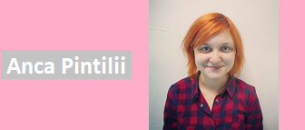
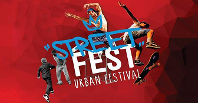
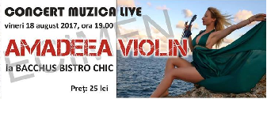
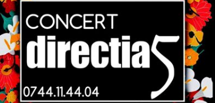

Istorie
Zona a fost locuită din timpul paleoliticului superior (aproximativ 5.000 de ani în urmă). În perimetrul Pieții Revoluției s-a descoperit un racloir de silex negru-vinețiu de formă trapezoidala. Obiect folosit la vânătoare în împrejurimile care atunci erau acoperite de păduri. O altă prezență umană în valea localității s-a descoperit cu ocazia săpăturilor pentru Pasajul Mărgineni. La opt metri adâncime, muncitorii găsesc urmele unei așezări din epoca mijlocie a bronzului - Cultura Monteoru. Un strat gros de mâl a păstrat pentru eternitate dovada marilor cataclisme care au modificat relieful. O alta așezare, de data aceasta, fiind identificată ca, aparținând epocii bronzului târziu - Cultura Noua a fost scoasa la lumina în perimetrul Precista.Geografie
Municipiul Bacău, reședința județului cu același nume, se află în Nord-Estul țării, în partea central-vestică a Moldovei, la doar 9,6 Km în amonte de confluența Siret-Bistrița. Geografic, se află la intersecția meridianului de 26° 55' longitudine estică cu paralela de 46° 35' latitudine nordică.Personalități
|  | ||

|
Ce poți face?
Parcuri
- Parcul dendrologic Hemeiuș, situat la nord de Bacău are o suprafață de 47,5 ha. Aici cresc peste 500 specii de plante lemnoase, dintre care 370 exotice.
- Insula de agrement este o insulă artificială, creată în mijlocul unui lac format de râul Bistrița, amenajată pentru agrement, cu locuri de plajă și pentru practicarea sporturilor în aer liber. Se pot face plimbări cu barca în jurul insulei.
- Parcul Trandafirilor
- Parcul Cancicov
- Parcul dendrologic Hemeiuș
- Parcul Catedralei
Restaurante
● Gourmet Pizza ● La Taverna Hotel Helen ● Piazzetta ● Bacchus Bistro Chic ● Restaurant DumbravaCafenele și ceainării
● Kamarad Coffee ● Antique Cafe ● Business Time Coffee ● Zoom Cafe ● Moo CafeTeatre
● Teatrul de Vară "Radu Beligan" ● Teatrul Municipal BacoviaMuzee
● Casa Memorială George Bacovia ● Observatorul Astronomic Victor Anestin ● Muzeul de Artă Bacău ● Muzeul de Ştiinţe ale NaturiiEvenimente
|

STREET FEST 18-08-2017 | Ora: 10:00 6 zile în care vor fi sute de voluntari în campaniile stradale , zeci de mii de informaţi , conferinţe şi seminarii cu şi... Detalii eveniment |

CONCERT AMADEEA VIOLIN 18-08-2017 | Ora: 19:00 Deja cunoscuta violonista Amadeea Violin va concerta live pe terasa Bacchus Bistro Chic. Talentul si frumusetea artistei vor... Detalii eveniment |
FILM MAI APROAPE 18-08-2017 | Ora: 20:00 Film Mai Aproape organizează petrecerea de strângere de fonduri a celei de-a doua ediții a festivalului, împreună cu trupa Myopia... Detalii eveniment |
|
KARAOKE NIGHT 18-08-2017 | Ora: 19:00 Vino sa petreci alaturi de noi, vineri, 18 august incepand cu orele 21:00.Fiecare cantaret va primi... Detalii eveniment |

SUNT EU, ANNABEL 29-08-2017 | Ora: 18:30 Spectacol de teatru vizual cu păpuși în mărime naturală destinat publicului adult ca înțelegere, pe 29 august 2017, la... Detalii eveniment |

CONCERT DIRECȚIA 5 24-08-2017 | Ora: 20:00 Ne dăm întâlnire pe 25 august pentru a crea o atmosferă emoționantă pe frontiera muzicii pop-rock. Îi invităm pe... Detalii eveniment |
|
Click pentru prognoză |
CONTACT 0700.000.000 asdfg@gmail.com |
||